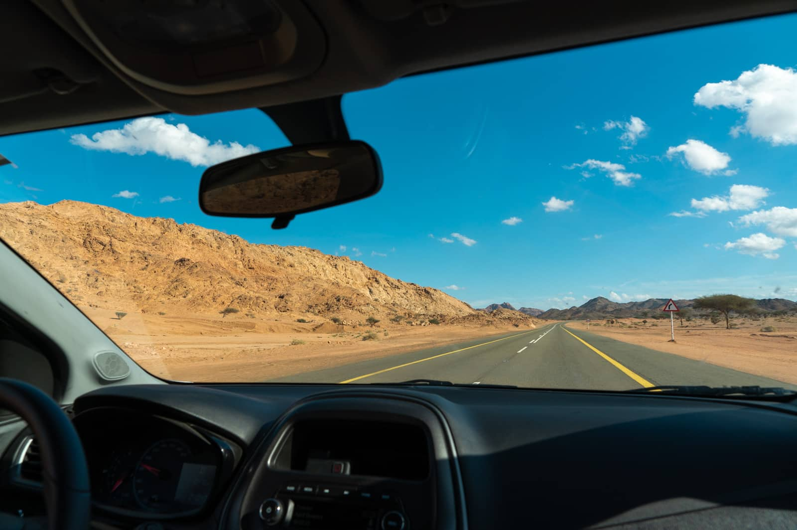
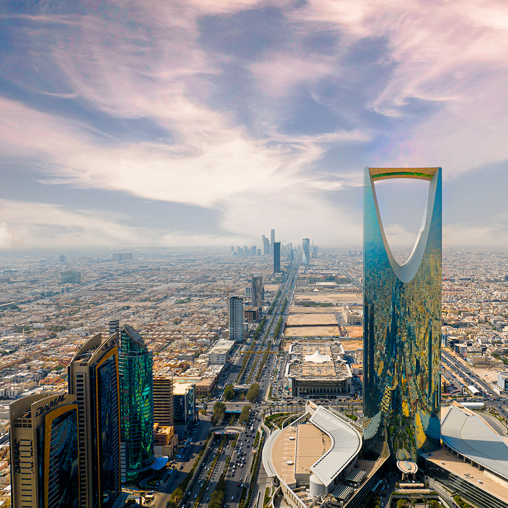
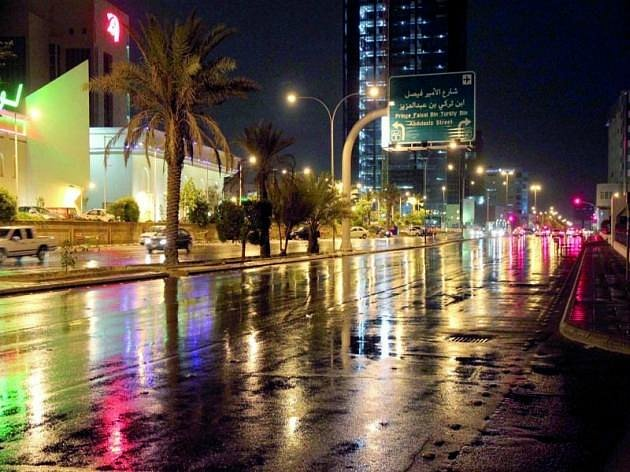
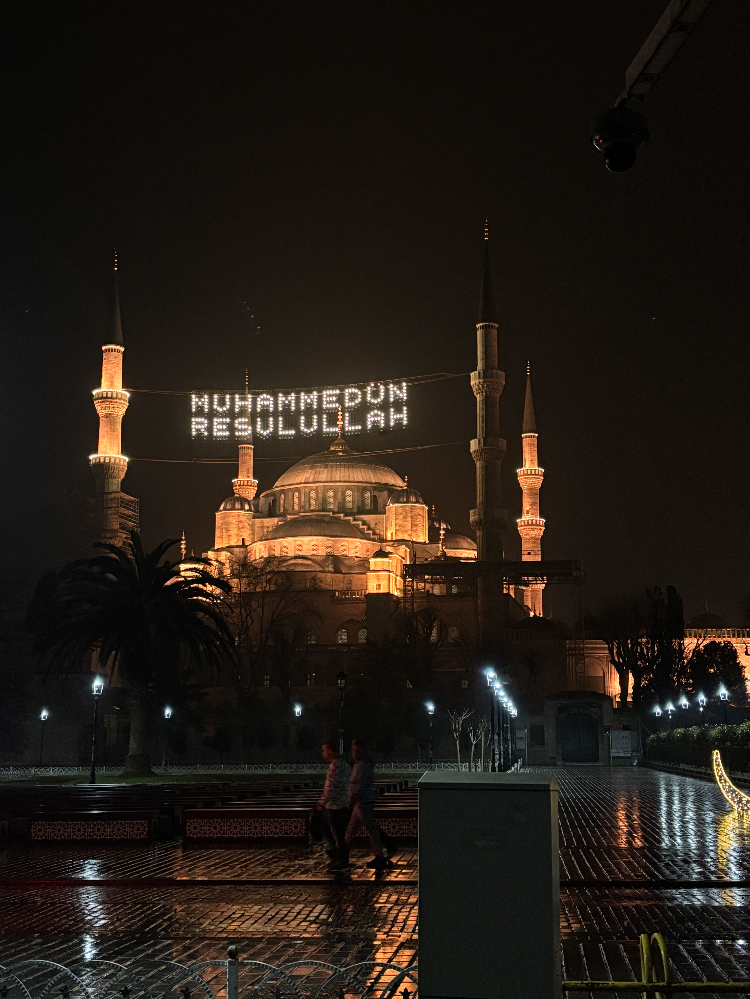
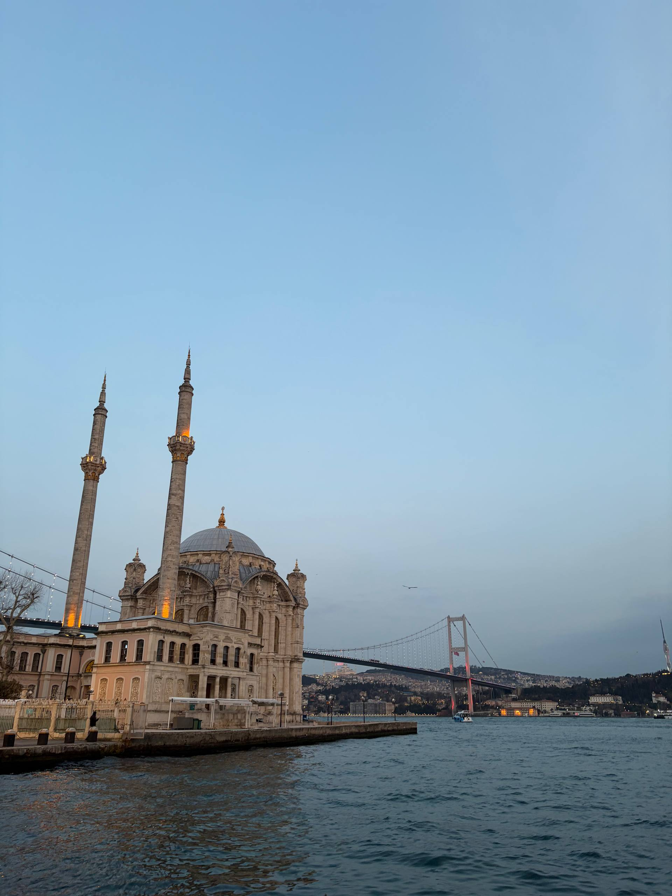
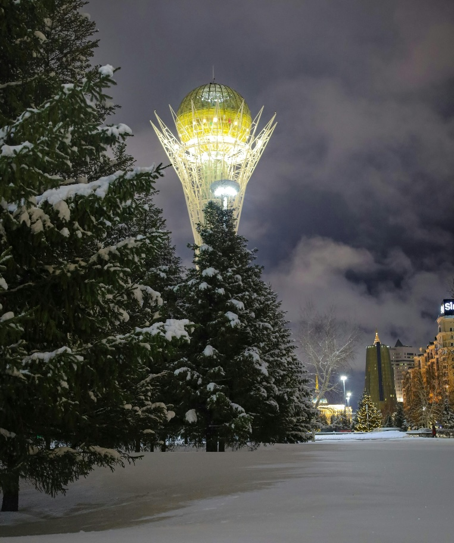

It usually takes 4 hours to fly from Dubai to Astana or Almaty — the two big cities of Kazakhstan.
But this time, it took 4 days.
There were no direct flights, so our 4-day journey began…

With no direct flights available, there was only one option — hit the road. We grabbed a taxi from NYU Abu Dhabi and set off across the border into Saudi Arabia. Hours of desert highway stretched ahead of us, but the adventure had officially started.

The landscapes were something else — vast golden deserts, modern skylines rising out of nowhere, and sunsets that painted the sky in shades we'd never seen before. Saudi Arabia surprised us with its beauty at every turn.

After the long drive, we finally made it to Riyadh. We checked in, dropped our bags, and explored the city at night. The lights, the food, the energy — it was the perfect pit stop before the next leg of our journey.

The next morning, we caught a flight from Riyadh to Istanbul. Looking out the airplane window, watching the terrain shift from arid desert to lush green coastlines — it felt like we were slowly getting closer to home.

Istanbul became an unexpected bonus of the trip. We wandered through the Grand Bazaar, watched the Bosphorus shimmer at sunset, tasted the best kebabs and baklava, and soaked in the incredible mix of history and modern life. Two days flew by in an instant.

After 4 days, 3 countries, and thousands of kilometres — we finally touched down in Kazakhstan. The familiar cold air, the familiar faces, the feeling of being home. It took way longer than planned, but honestly? It made the best story.
But every detour was worth it.